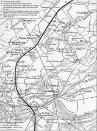
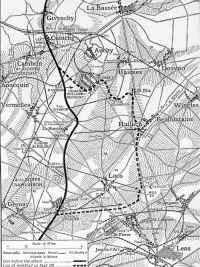
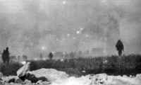
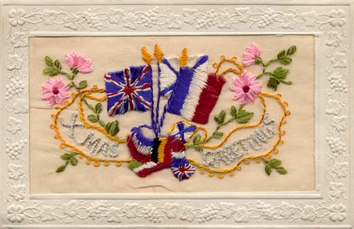
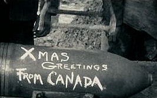
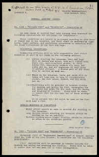

|
MAY, the town of
La Couture is heavily
shelled.
The civilians still in the town, the artillery
units like Charles's, and several infantry troops
camped at La Couture are targeted by the shelling. THE
BATTLE OF AUBERS RIDGE On May 9, in fine, windy weather, the Battle of Aubers Ridge begins.
After a very short but very violent artillery bombardment, to preserve
the element of surprise, the British attack on the flanks, at
Fromelles, and come up against strongly defended German lines.
They withdraw on the evening of May 9 without having advanced. British
losses are enormous: more than eleven thousand dead. Charles's
artillery unit fired seven hundred and eleven salvoes that day in support of
the infantry. It is an infernal pace, a hell of noise and
smoke.
That evening the non-commissioned officer notes in the unit diary
that they did fine work, thanks
to good communication. He also notes that the guns
are standing up well to the strain. The next day is rather quiet, but the firing resumes the
following days. The enemy fire is very heavy and sustained; at night it is
intermittent. THE BATTLE OF FESTUBERT The Battle of Festubert
took place from May 15 to 25, 1915.
It began with a long artillery bombardment of nearly
sixty hours. After initial success, it stopped on the 25th for
lack of ammunition. British and Canadians took part in
the assault, which gained about five hundred metres in
depth on a six-kilometre front, at the cost of sixteen thousand dead on the
Allied side, more than two thousand of them Canadians.  Charles's artillery
unit fires an average of five hundred salvoes a day at
various targets. Their shelters are shelled several
times and two men are wounded. Charles's artillery
unit fires an average of five hundred salvoes a day at
various targets. Their shelters are shelled several
times and two men are wounded.
On May 19, the non-commissioned officer notes in the unit diary that the men
are utterly exhausted after this intense fighting.
The drivers have taken the horses to the rear to
get them out of the line of fire.
On May 26, the firing is light; it is almost quiet on the front
line. But late in the morning, Charles's battery is heavily
shelled for an hour with 8-inch shells. The next day,
another bombardment comes early in the afternoon. There is no damage, but that same evening the battery moves to
Richebourg St-Vaast. Then, on May 28, it moves to La
Fosse, where it bivouacs.
 JUNE, the weather
is fine and hot, and the firing light. But from June
12 another battle is being prepared. JUNE, the weather
is fine and hot, and the firing light. But from June
12 another battle is being prepared.
The left section of
Charles's artillery unit and the observation team
go back to La Couture; the next day the
right section follows them. The horse lines are left at La Fosse.
... THE BATTLE OF GIVENCHY  Givenchy
is a front of less than three kilometres, heavily fortified by a dense
network of barbed wire and trenches. Two
new tactics of war are used in this battle:
mines and the Lewis Gun machine gun. Small attacks follow one another
until June 15, 1915, when the offensive is
officially launched. On June 15 and 16, 1915, the troops
of the 1st Canadian Division join two British divisions in a coordinated attack.
On June 15,
Charles's unit fires nearly three hundred salvoes all evening,
at the enemy batteries in support of the
infantry attack. On June 16 and 17 the heavy firing continues.
The non-commissioned officer writing the unit diary notes: "The
attack is
believed to have been a success. Shelling the enemy trenches
made the attack possible. It is reported that the wire and parapets
are completely destroyed. The operations of the last 3 days seem a
success. " Which in fact is not the case. The
losses are severe, nearly two thousand men, four
hundred of them Canadians. The objectives are not reached... the front
stabilizes until April 1918. CHARLES
COMMITS A SECOND OFFENCE On June 17 Charles commits a
second offence, "Neglect of duty" . No details are given about
this offence, except that he is sentenced to
five days of "Field Punishment #1", what the soldiers
called "crucifixion". During those five days the weather
is still glorious, and the 1st Canadian Heavy Battery fires only a few
salvoes. Charles returns to his unit on June 23. Rain
sets in for several days; the rate of fire averages
thirty salvoes a day until the end of the month.
JULY, the 1st
is DOMINION DAY; a few salvoes are fired at an enemy
battery. But on this Canadian holiday, NCOs and
men relax playing sports on the horse lines. (opposite,
the Canadian flag of the time)
The month begins fine and hot, and the firing is light.
On the 15th, in cooler, cloudy and windy weather, the guns are calibrated; the wear is only about 0.7
inch. That is very little for the number of rounds fired.
The battery is shelled during the evening. The next day
big shells fall on the battery, luckily without doing any
damage. Light firing continues the following days on
various targets, often spotted by aircraft.
On the 23rd, in wind and rain, the battery moves by night to Sailly, leaving
in the evening and arriving at daybreak. The
battery moved in good order, with no straggling or confusion.
The guns are put in
position at once, and a telephone line
to headquarters is then installed. Charles's
unit is now attached to the 8th Heavy British Brigade. The end of the month is quiet,
the firing
light. AUGUST, the whole month
continues just as quiet. On August 29, the
right section moves to Zelobes. The next night it begins digging gun
emplacements, "gun pits", in a new position west of Bully. SEPTEMBER, in the rain, the
right section goes on digging the "gun pits"
at night. Then it works on building armoured shelters. On
September 21 it resumes
the offensive. The next day, the
left section sets out to join the
rest of the battery at Bully. It arrives during the
night, and the guns are put in position at once. And the firing
resumes on the enemy batteries, the wire, the roads.
The targets are often supplied by observation from
aeroplanes, or by the infantry's S.O.S. Calls. THE BATTLE OF LOOS
The Battle of Loos, one of the main offensives on the Western Front in
1915, was the British
part of the "Second
Battle of Artois". The plans were thwarted
by the shell shortage: the preliminary bombardments, essential in trench
warfare, were of low
intensity.
 On
September 25, at daybreak, the infantry advances toward Loos.
The artillery supports them; Charles's unit fires more than three
hundred and fifty salvoes at
the enemy batteries and, at
night, shells Lens station. The British break
through the German trenches and take the
town.
However, communication and
supply problems keep the reserve units from arriving
in time, and this initial success cannot be exploited. The fighting goes on until the 28th, but the British are
forced to fall back to their starting positions. This
battle claims many victims (more than
fifteen thousand dead and thirty-four thousand wounded
on the British side). 
British infantry advancing through the
gas on
September 25, 1915. That day the British released a hundred and
forty tons of mustard
gas with mixed success, part of it being blown back on
them by the
wind.
OCTOBER, the first
week of the month is fine; every day the artillery fires at
enemy batteries and other targets, such as the chimney at Cité
St-Édouard, suspected of being an enemy observation
post.
At night the fire is concentrated on the roads, since
troops move at night. That is exactly what
Charles's unit does: on the night of October 3, the unit moves to a
new position south of Philosophe. On October 7, the
Canadian battery's position is shelled, and the emplacement of gun #1
is destroyed. No lives
are lost. At nightfall, the guns are moved to Mazingarbe
park, where, the very next day, they go into action against the German attack
expected through Bois Hugo. The German infantry is
dispersed, according to an
aeroplane's observations. Two days later, the unit digs new gun emplacements a little farther on.
The work is hard because the ground is hard limestone. The salvoes continue at a sustained
pace, barrages are frequent, and at night the
roads are targeted. On the evening of October 22, in the fog, the unit moves and bivouacs for the night
in a big farm near Locon. The next day it
sets off again late in the afternoon for its new position at Le
Touret. Autumn is settling in more and more: cold, rain and strong winds.
The battery takes salvoes of shrapnel. So, as
usual, knowing it has been spotted by the enemy, the battery changes
position. The order comes to go to Bailleul on the evening
of October 29. The next day
the major goes to reconnoitre the positions. The right
section goes north of Houplines, the left to
Clé d'Holland, taking the
place of the 16th British Brigade. NOVEMBER, the fall
of 1915 is foggy. The non-commissioned officer who writes his report each evening in the diary of the 1st Canadian Heavy Battery varies
his vocabulary to describe the weather: " dull, foggy,
hazy, misty, cloudy,...", not counting the days of
rain and wind. All this fog slows the rate of fire,
because observing targets is difficult. The time is used to
inspect the guns; some are withdrawn, others
exchanged with other units, and a German
interpreter joins Headquarters. On November 11, as the weather clears for a few hours, several hostile aircraft fly over
the British positions. The firing goes on whenever the fog allows. On
November 21,
the first frost, the rime does not prevent many salvoes
on trenches under construction and on transport moving on the road.
Gun #1 breaks during a series of salvoes.
On November 27, in cold weather, the town of Armentières is heavily
shelled. In reprisal, Charles's battery keeps up heavy fire
over the following days. 
The women of the Flanders region embroidered Christmas cards like
this one and sold them, for a few cents, to the soldiers, who
sent them to their families.
DECEMBER continues
the same as far as the weather goes. The unit fires about a hundred salvoes a
day, except on days when observation is too
difficult.
It rains so much that on December 6 the guns of
the right section end up partly under water; the next day they move to higher ground.
And the firing goes on...  On Christmas Day,
under cloudy skies, the unit fires some fifty salvoes at the château
and its surroundings, knowing full well it is the headquarters
of the German officers. (One may think that choosing
this target on this particular day was a way for the Canadian
battery to let off a little steam...)
December 31 is foggy, and the following night, New Year's
Eve, begins in the rain. That does not stop Charles's
battery from firing on German batteries that
are shelling La Chapelle d'Armentières.
The holidays of 1915
are grim for the 1st Canadian Heavy Battery.
|

Routine order
on preventing frostbitten feet among the
soldiers, October 11, 1915
Library and Archives Canada
Besides the enemy, there were other ills to fight, such as
colds, flu and fleas. But in the cold and
damp, a serious problem called " trench
foot" spread. It was a kind of
frostbite that cut off the blood flow to
the feet, trapped in heavy boots for
hours spent in mud and icy water. The skin
rotted, causing gangrene in extreme cases
and requiring amputation of the limb. The only
remedy was not to lace one's boots too
tight, to dry one's feet fairly regularly
and rub them with grease or, if possible, with whale
oil, known to keep the limbs warm
longer, then put on dry
socks.
|

|